Music listeners need a way to feel emotionally connected to others through their shared experiences and memories with music in their lives
because there are limits with music listening services on the user experience for engaging in shared memory and meaning of music.
Introduction
This study explores the relationship between music, human emotions, and memory. Music plays a prominent role in everyday life for many people (Jäncke, 2008).
People listen to music throughout the day through technologies such as radio and audio recordings. Music takes many forms throughout people’s daily lives:
music as part of collective cultural memory and identity, music as a method of creating a sense of belonging, and music as a connection between an individual
to a larger community and generation (Dijck, 2006). Studies have shown that there is an association between memories and emotions to form autobiographical
memories. One study examined the emotions that are evoked when hearing musical pieces from one’s past. The study found that most songs evoked various strong
emotions, which were mainly positive such as nostalgia (Jäncke, 2008).
Music streaming services today have community features, such as sharing, for users to actively engage with the community through the shared interest in music.
Some examples of this are sharing a playlist of songs with a friend or leaving a comment on a song. However, these community features vary across different apps,
thus limiting how deep individuals become engaged with the community. Taking into account the strengths and limitations of current music streaming apps, the
project will aim towards creating an app that focuses on enhancing community features where individuals can share their emotions, memories, or experiences with
music in their lives with others in the community.
Literature Review
Music is strongly intertwined with memories, being attached to events of the past, accompanied by sights, sounds, and feelings from a specific event. A cognitive
research study examining the ties between music, memories of autobiographical events, and emotions found that young adults tie in recorded music with memories of
specific autobiographical events, whereas respondents who indicated an age over 45 tend to tie specific songs to nostalgic moods (Dijck, 2006). Another study
confirmed these observations about the relationship between musical memory and emotions, arguing that music evokes memories of youth and reminds people of past
events, thus intensifying feelings of nostalgia, regret, or reminiscence (Dijck, 2006).
Autobiographical memories exist in different levels of detail. The broader level of detail describes it as periods in one’s lifetime. The finer level of
specificity is knowledge of specific events (Janata et al., 2007). When thinking about autobiographical memories for music, one way to think about it is the
retrieval of information about the music, such as the title of the song, the artist, or the time period it was popular. However, without these pieces of information,
we can still relive the memories and emotions tied with a piece of music just by listening to it. In many cases, the music piece becomes stored in memory during
an event without the need of knowing the song’s title. In a study focusing on the characteristics of autobiographical memories evoked by music, it was observed
from written responses that there was a large range of memories associated with music. Some descriptions are of specific events that happened in association with
the music, such as waiting at a red light in the car with a high school friend. Other descriptions tied music to social relationships, such as friends or significant
others. There are also responses where the participant tied different songs to specific moments in their life, such as stages of a romantic relationship while they
were young (Janata et al., 2007). The different levels of specificity tied to the memory of a song varies across individuals, but a common theme is that the music
means something to the individual, whether trivial or not.
Technological advancements have led to the ability to preserve and archive music in physical and digital formats. Music streaming apps today are an ever-growing
archive of music from around the world. It acts as an archive of music from the past, but also continues growing for music constantly being created in the present.
Due to the continuous growth of music, apps are caught between their own purpose in the app’s design and the desires of the user. Keeping in mind the complex ties
between music, memory, and human emotions, users may tend to feel drawn towards finding music from their past, while the app is designed to push users toward
exploring music. A case study on Spotify by Marika Lüders in the European Journal of Cultural Studies focuses on defining what Spotify ‘wants’ and what humans
want. The study characterizes Spotify’s features into two categories: material and machine agency. Machine agency features include recommendation algorithms.
Material features include browsing music, connecting with friends, editing playlists, and saving albums and artists. The purpose of pushing people towards exploring
music is done through the machine agency, whereas the personal and mnemonic meaning of music is supported by material features (Lüders, 2021).
The study interviewed participants on their experiences with different features of Spotify. Participants found the accessibility to vast music libraries made them
more inclined to explore and discover music. However, being able to access and explore a vast amount of music leads to ephemeral listening-patterns, where users
described themselves losing focus to finish listening to an album and jumping quickly between songs. One user compared the experience of buying a CD and listening
to it in a certain setting in contrast with being able to pick songs at random on music streaming services. They explained how the short-attention span with
listening to music makes it difficult to associate songs or albums with certain occasions or memories. This indicates the design to explore in Spotify may be leading
to a loss in the sentiments of associating memories with music (Lüders, 2021). Actions that counteract this design is the user’s will to archive. The feature of
creating playlists acts as a primary instrument for users to archive music that matters to them. It is akin to the physical act of collecting CDs and other physical
music recordings.
By documenting the role of music in human memories and emotions and the potential limitations of community-related features of current music streaming services,
this project is aimed to develop a user experience that engages music more closely with the autobiographical memories and emotions of individuals and introducing
useful features to bring individuals closer together through the shared experiences of listening to music.
Competitive Analysis
I examined popular music streaming apps to understand what services many people use to listen to music. This competitive analysis serves as a method to help me
understand the design of the most widely used music streaming services. The rankings of the top 5 music streaming apps are ranked on total number of users and
paid subscribers from 2023 statistics summarized on BusinessofApps database overview for “Music Streaming App Revenue and Usage Statistics (2023)”. I chose two
other apps based on features focused on the experience of sharing music with others. By choosing apps from the popular end of the spectrum to the niche side,
a cross comparison analysis can be conducted.
Table 1: Competitive Analysis of Music Apps
App Name
Description
Spotify
Spotify is a digital music, podcast, and video service with massive growing libraries of songs and content by creators around the world.
App characteristics include:
Free and premium subscriptions
Recommendation algorithms based on an individual’s music taste
Creating playlists either individually or collaboratively
Connect with friends
The app’s launch page lists a user’s most recently listened to media, playlist compilations based on media the user has listened to, and recommendations
for exploring other artists and creators. The front page is a convenient hub for the user to re-engage with their last activity on the app and
to further explore.
Apple Music
Some characteristics of Apple Music:
Paid subscription only
Live radio stations
Curated playlists
Apple Music distinguishes itself from other music streaming services with its radio stations and curated playlists features. The radio stations feature
song broadcasts, pop culture news, and artist interviews. When opening the app, the user is greeted with a feed showing playlists, artist recommendations,
and radio stations. Apple Music focuses on guiding the user to discover new music in a curated fashion.
Amazon Music
Amazon Music features a massive amount of current and back-catalog songs and albums. Some characteristics of Amazon Music:
Free and premium subscriptions
Playlist creation and sharing
Recommendation algorithms based on listening habits
Hi-resolution lossless audio
Users can check the audio quality of the songs they listen to.
YouTube
YouTube is a video sharing website and often used to play music, search for songs, and assemble playlists. Recently, YouTube
launched its music service YouTube Music featuring official albums, videos, live performances, and more. Characteristics of YouTube Music:
Free and premium subscriptions
Music videos
Recommendation algorithms based on listening habits
Hi-resolution lossless audio
The front page features a selection of music to “get you started”, playlists featuring songs and artists the user enjoys, playlists of music
the user has not listened to in a while, playlists made by the community, newly released music, radios, and more. YouTube Music’s front page seems
to pack in a lot for the user to explore music, revisit past favorites, and get to know the music of other community members.
Pandora
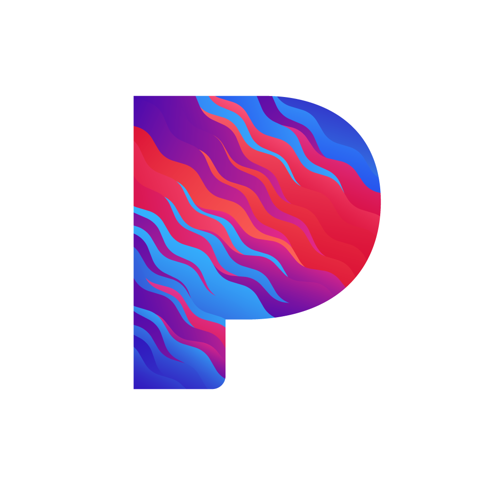
Pandora is a music streaming and discovery app. Characteristics of Pandora:
Free and premium subscriptions
Radio stations
Users can create “stations” based on their favorite songs, artists, or genres, in which the stations will play related songs. The user can like or
dislike songs in the station to adjust the songs it plays.
Musicboard
Musicboard is a social platform that allows users to keep track of music they listen to and actively engage with the music they listen to through
various action features. Characteristics of Musicboard:
Free and premium subscriptions
Write reviews
Rate Music
Users can share their thoughts on music with other community members.
Makromusic
Makromusic is a social platform that focuses on matching users with other people that share the same music taste. Characteristics of Musicboard:
Free and premium subscriptions
Match with people
Users can match with people who are listening to the same music at the same time as the user. The user can then open a chatroom with the match.
This is similar to social dating apps. Applying it in a musical context is a unique concept that this app attempts to execute.
Here is a table of features the apps have, providing a visual of common features among music apps and features unique to a few apps.
Table 2: Features in Music Apps
Spotify
Apple Music
Amazon Music
YouTube
Pandora
Musicboard
Makromusic
Music Player
X
X
X
X
X
Music Sharing
X
X
X
X
X
Create Playlist
X
X
X
X
X
X
X
Friends/Following List
X
X
X
X
X
Live Radio
X
X
Sound Quality
X
X
X
X
X
Music Video
X
X
X
X
X
Recommendations
X
X
X
X
X
X
X
Write Reviews
X
Leave Rating
X
X
X
Chat with Other Users
X
X
X
Free/Paid/Both
Both
Paid
Both
Both
Both
Both
Both
All the apps offer paid subscription plans. The following table lists out features offered by the paid subscription plans across all apps.
By observation, many of the apps share similar features in their paid plans.
Table 2: Features in Music Apps
Features for Paid Subscription
Spotify
Download music
Ad-free listening
On mobile, pick and lay song on-demand
Unlimited skips
Apple Music
Ad-free listening
Audio quality features
Compatible features across Apple devices
See friends activity
Amazon Music
Ad-free listening
Audio quality features
Download music
Pick and play song on-demand
Personalized Stations and playlists
Unlimited skips
YouTube Music
Ad-free listening/viewing
Download music
Background play
Pandora
Ad-free listening
Better audio quality
More skips
Customizable playlists
Offline listening
Musicboard
More features on user profile
Unlimited length on reviews
Unlimited length on list descriptions
Lists have personal banners
Makromusic
Filter matches
More profile matches
Filter explore page
Notification when someone listens to a favorited song
Match ratio statistic of matches
User Research
Secondary Sources
For part of my user research, I analyzed data collected by two studies that have interviewed and surveyed people about their experiences with music.
The studies I analyze data from are “Record and Hold: Popular Music between Personal and Collective Memory” by Dijck and “Pushing music: People’s
continued will to archive versus Spotify’s will to make them explore” by Lüders. Analyzing digital records will provide an overview of the music
experience from a music listener’s perspective while interview data will provide in-depth understanding of what participants think about specific
aspects of the music listening experience and reveal common keywords in regards to these experiences.
Dutch Top 2000 Narrative Responses
In Dijck’s study “Record and Hold: Popular Music between Personal and Collective Memory”, Dijck analyzed an online set of narrative responses
generated through the Dutch Top 2000, a national radio-event. This radio event organizes a five-day broadcast of the 2000 most popular songs of
all times, compiled by public radio listeners. During the event, the station asks for personal comments from listeners, which involve evaluations
and memories of the songs. The comments range from in the moment, physical experiences to reminiscing on past memories.
There are many comments that Dijk quotes in this study. I drew the following keywords to categorize the various types of comments: technology,
mood, memory, family, and collective. Below is a table that ties quotes from comments that fit these keywords.
Table 4: Keyword Categories from Dijk's Study on Dutch Top 2000's 2004 Database
Categories
Comments
Mood
“elicits the ultimate Sunday-afternoon feeling”
“a feeling I associate with cigarette smoke”
“There are moments in life that you feel thoroughly, profoundly happy. This was such a moment”
“The intense sorrow I felt that night was expressed in Bono’s intense screams”
Memory
“I isolated myself from my family by putting on the headphones and listening to this song”
“I was waiting on a boat someplace in Norway when I heard this song for the first time”
“the peaceful tidal waves in the fjord matching the melodious waves of music”
“I can see a picture of my grandmother’s living room”
Technology
“I keep most songs on CDs”
“I have the entire list of songs stored in MP3 format on the hard disk of my PC”
“pushing the little Lenco-speakers against my ear”
“both cars had their own iPods attached to the stereo system”
Family
“my father brought her this album as a present”
“I would sing along with [my father] every Doors’ song”
“my father passed on to me was his musical taste”
“I only found out about my parents’ story several years ago”
Collective
“half a dozen of my class mates drove to France to celebrate our high school graduation”
“reunion and I’m sure we’ll bring our iPods along”
“we sang along as loud as we could”
“with a number of friends I organized disco events”
Mood encompasses emotions and general sensations the person feels when they listen to a song. Memory describes specific scenes the person remembers
when they hear a song. Technology describes the type of recording technology that existed during the time the person remembers the song. Family shows
a connection between family members through shared stories. Collective describes social activities people remember when they listen to music.
User Experience with Spotify
Lüders’ “Pushing music: People’s continued will to archive versus Spotify’s will to make them explore” is a case study on the user experience for
the music streaming service app Spotify. The study conducted interviews to examine how people express their needs for exploring and archiving music.
For exploring music, a recurring theme among participants is the easy access to vast music libraries. This made them more inclined to exploring
and discovering music. One participant described how Spotify encouraged them to become more open to music they would not have listened to in the past.
The second way participants explore music in Spotify is by seeing what their friends are listening to by looking at the friend feeds feature in the app.
The third way of exploring music is through the recommendation algorithm. The recommendation algorithm similarly helped some participants open up
their tastes in music genres.
For archiving music, many participants felt that Spotify’s features for saving and collecting music was inferior to physical collections or digital
collections of music as local files. The participants expressed that saving music involved the user knowing about the feature and actively using the
feature to save music. One participant expressed that they have to actively remind themselves to remember the artist they just listened to before they
move on to listening to other artists. Another participant preferred the nostalgia of having their own material collections of their favorite artists
and albums on their iPhone and physical CDs.
Spotify does offer the function to create playlists, which users use as a means to save music. Participants’ reasons for creating playlists go beyond
just creating a digital archive. Participants want to remember certain phases of their life or express a particular mood. One participant explained that
they used playlists as a way to link personal meanings in their life to music: “when I was 14, that was the time I loved hip-hop.” Another participant
created multiple playlists for different moods and environments: “I have several work-playlists that I have in the background while working.”
User Interviews
After analyzing secondary sources to understand a sample of the population’s relationship with music, I conducted interviews with two people.
My interview questions were focused on understanding the past and present relationships between the participants and music.
Interview 1
My first participant is someone in the elderly age group above 60 years.
Do you think music has an important role in your life? Explain?
The participant thought that music plays a major role in his life. He listens to music everywhere he goes while performing various
activities such as driving, walking, and biking. He regarded music as a form of pleasure and relaxation.
What kind of music do you listen to?
He enjoys listening to 50s rock & roll. When it comes to listening to music on the radio, he prefers tuning into oldies stations.
When it comes to the CDs he owns, he likes 60s and 70s rock music.
Do you have a special memory related to music?
The participant laughed and remembered the hit song “Wake Up Maggie” by Rod Stewart back in the early 70s. He associated the song with
the event of him going to college for the first time.
How did you listen to music when you were younger?
In his teens, everyone used record players to listen to music. He and his friends would buy 45 RPM records and bring them around.
In his early teens, he would go to parties or visit a friend’s home and bring a stack of 45s to play music. In his later teens, the
Beatles just came out and were very popular. He and his friends bought their records and would go over to a friend’s house to closely
analyze the music and try to figure out the lyrics.
How do you listen to music today?
The participant currently uses Apple Music to collect and listen to music. He explained that if there is a song he likes, he would like
the song and add it to his song library.
Is there anything about listening to music today that you miss from the past?
The participant did not feel dissatisfied with his music listening experience in the current day. The only thing he misses about the past
is being young.
Interview 2
The second participant is in the middle-aged group below 60 years.
Do you think music has an important role in your life? Explain?
The participant thought music was important in their life. She thinks of music as a way to relax and as an outlet for emotions.
What kind of music do you listen to?
The participant has no preference in what music she enjoys listening to. She instead keeps up with current music trends.
Do you have a special memory related to music?
The participant recalled a distant memory from her youth. The participant was raised in Taiwan and recalled when she would
accompany her mother to listen to music. Her mother preferred listening to Chinese music that was created during the WWII era.
The participant also described how the singers would wear traditional clothing called qipao and had a cautious posture on stage
unlike today where singers actively perform on stage.
How did you listen to music when you were younger?
She mainly mentioned the radio. Vinyls were not as popular where she was because the machine used to listen to vinyl was expensive.
She explained that music was played on a radio in public places. Thus, everyone could listen to the music together. She also mentioned
a special radio that could play tapes. If either her or her friends had certain tapes, they would meet up to play the songs together on the radio.
How do you listen to music today?
The participant currently uses the Spotify app and the internet to search for and listen to music. She explained that she sometimes uses
YouTube to first search for old songs that she may or may not be familiar with, then find them again on the Spotify app to listen to.
Is there anything about listening to music today that you miss from the past?
She expressed that she is satisfied with listening to music on apps today. The participant also mentioned that the experience of listening
to music changes over time. She explained that in the past, music was a more shared experience where she used a radio to listen to music with
a group of friends. In comparison, today she can enjoy music in private.
Analysis of User Research
Secondary Sources Analysis
Analyzing the quotes collected from the Dutch Top 2000 in Dijk’s study, I categorized overarching themes as keywords based on the context of
the comments: mood, memory, technology, family, and collective. I found that these keywords often overlap with each other because memories are
complex and can contain the other keywords within it. For example: one comment encompassed a memory of listening to music with friends with
iPods in the car. By recognizing these keywords as well as how they overlap, I got information about how to execute features to allow users
of my app to express their memories with music.
From the case study on user experiences with the Spotify app, I learned what users liked about the app and what they thought was lacking in
their listening experience with the app. Materially, users can archive and save their favorite music to return to later. Emotionally, users
create playlists to record memories, reflect emotions, or express phases in their life. By understanding how users feel about playlists,
I can develop a way to enhance the experience of creating playlists to the users of my app.
User Interviews Analysis
I learned from these interviews that there is a special difference between the experiences of listening to music in a group compared to in private.
In a group, the experience is remembered as a fond memory involving friends and the technology used during that time. Individually, the experience
is more personal, involving daily life routines or reflecting one’s mood. By understanding these differences in music experiences, I can develop
a better understanding of the user personas I will create that will use my app.
User Personas
I created three user personas to represent the users I intend to target with the app I will create. Below is one of the three personas.
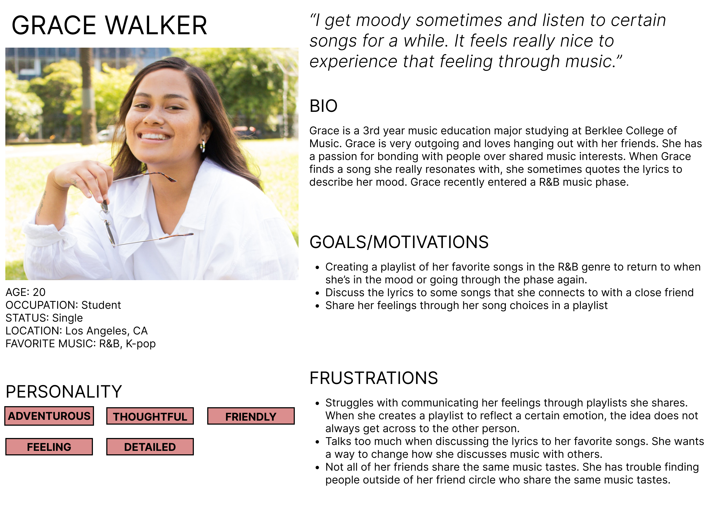
Grace Walker is one of three personas I created as a potential user for my project.
Scenario and Journey Map: Reflection
Grace is looking to make a playlist to reflect her current R&B music phase and discuss her song choices for the playlist. She knows many music
listening apps have a playlist feature, but they are limited in just being a collection of songs. She wants to be able to discuss why she added each
song in her playlist. During an online search, she stumbles upon Rhythmry, a music discussion app that encourages creating meaningful playlists curated
by users. Grace launches the app and searches for her current favorite songs. After finding a song, she taps on the option to add it to a new playlist.
The playlist creation screen comes up with a number of options. The playlist lists out some suggestions for the playlist’s theme and title based on her
initial song addition. She chooses the “R&B” option for the genre and titles the playlist “Moody R&B Phase”. She gives the playlist a simple description:
“R&B that reaches my soul.” At the bottom of the screen is a box to add a description for the song she is adding to the playlist. She writes “I was
feeling pretty down on the day I listened to this song. I spent the day alone with no one to talk to and listened to music to pass time. The lyrics for
this song felt like a reflection of my mood that day so it was comforting. I couldn’t get the song out of my head for the next few days so I knew I had to
remember this one.” The playlist auto-saves her edits. Grace taps on the option to add another song and begins her next search.
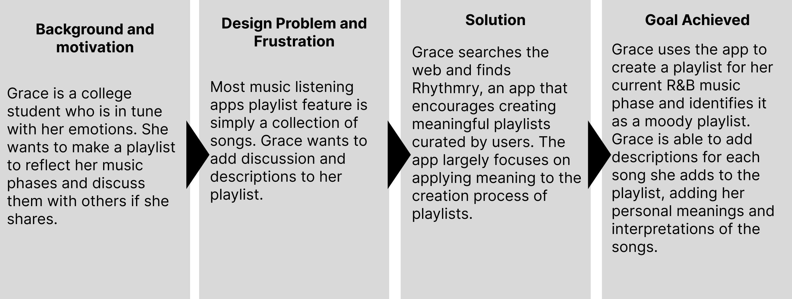
Grace Walker's journey map
Low Fidelity Prototype Sketch
Design Requirements
The following is a skeletal view of the features the app will have, including common features among music apps. The focus of the app will be on the
playlist creation experience, so more attention will be on this feature.
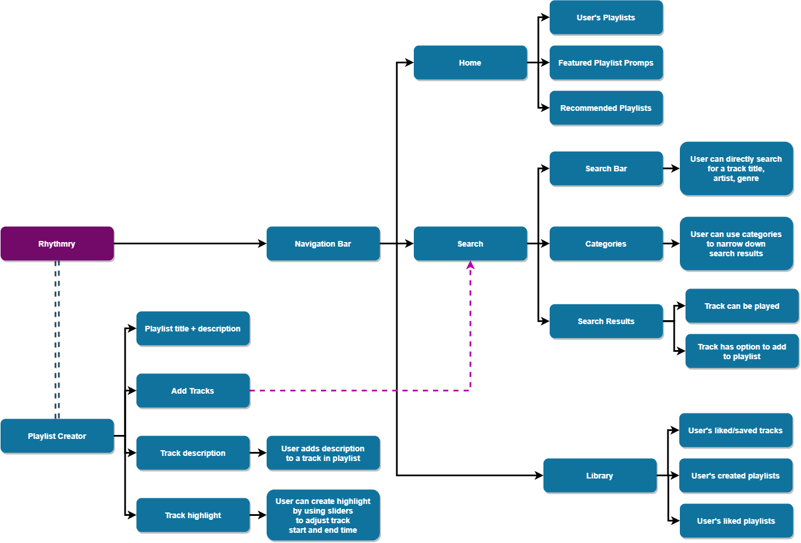
Diagram showing design requirements for app's features.
Task Wireflows
The main task is “How to Curate a Playlist.” The following are subtasks to achieve the main task.
Create the Playlist
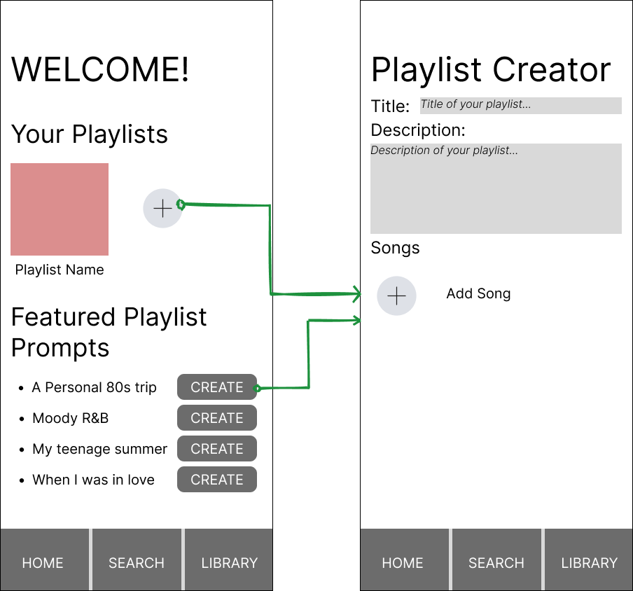
Wireflow for wireframes depicting steps to create a playlist.
The user can enter the playlist editor by either tapping the plus button to add a new playlist or tapping a create button next to a featured playlist prompt.
Add Song to Playlist
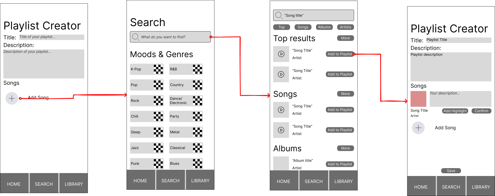
Wireflow for wireframes depicting steps to add a song to the playlist.
The user can navigate to the Search page from the Playlist Creator by tapping the plus button to “Add Song”. In the Search page, the user can either
search using the search bar or by categories listed in “Moods & Genres” below the search bar. After finding a track, the user can listen to it and tap on
“Add to Playlist” to add it and return to the Playlist Creator screen.
Edit and Save the Playlist
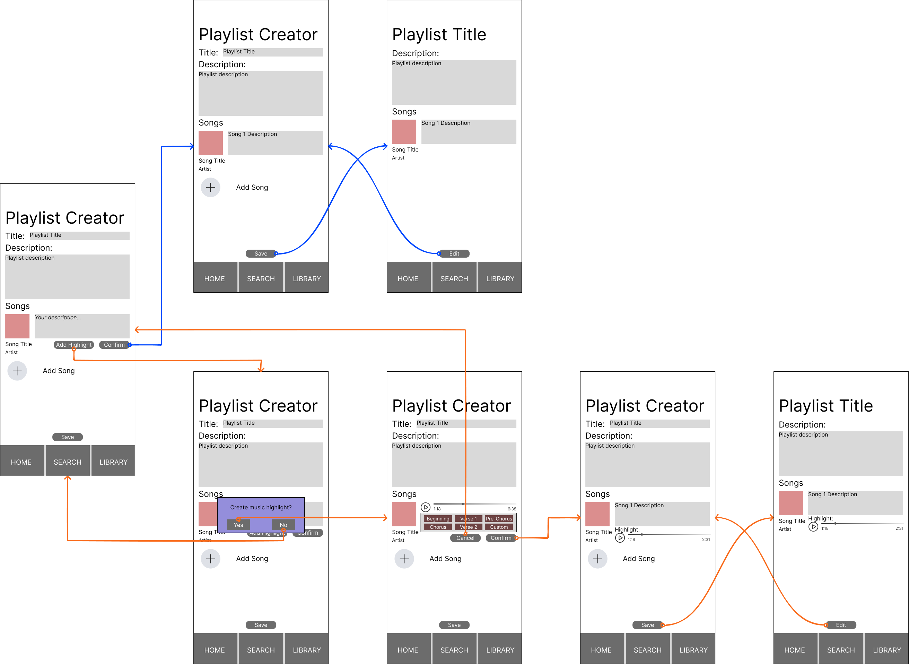
Wireflow for wireframes depicting steps to edit and save a playlist.
The user can enter a description for the track added. There are two options below the track description box: “Confirm” and “Add Highlight”. “Confirm”
saves the track description. “Add Highlight” button will cause a popup asking the user if they would like to create a music highlight. This feature allows
the user to select a certain part of the track they want to feature in their playlist. The user can choose from several options or manually create the part
they want to highlight. The user may either confirm or cancel this process. The user can save the playlist or continue adding more tracks.
Wireflow Summary
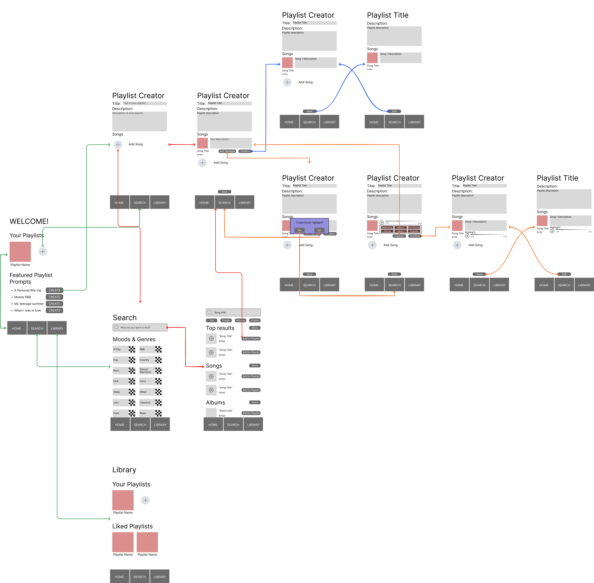
Wireflows shown for all the wireframes in the low-fidelity prototype. Created on Figma.
This wireflow features 4 main scenes: Home, Search, Library, and Playlist Creator. The bottom of the screen has a navigation bar to navigate to Home, Search,
and Library. Home welcomes the user and features the user’s playlists and featured prompts to begin playlist creation. The user is taken to the Playlist Creator
screen when creating a new playlist. Playlist Creator has user input for the playlist’s title and description. The user can add tracks on this screen by tapping
“Add Song” in the Playlist Creator screen. Search has a search bar for users to type in. Below the search bar are several categories if users wish to search
categorically instead of directly looking for a specific track. After typing in a search query, tracks that match or are related to their query are listed.
Next to the track is an option to add to the playlist. Tapping the add button takes the user back to Playlist Creator. The user can add a description or
create a highlight to feature for the added track. The highlight feature allows the user to choose a part of the track to highlight. There will be options
for suggested highlights, or the user can manually create it. After confirming track description and/or highlight, the user can continue to add more tracks
or save their playlist to exit editing mode. Library shows the user’s created playlists and playlists they have liked from other users on the platform.
User Wireflow Test
User 1
User 1 was able to complete the task smoothly. It was obvious that the plus symbol on the front page meant to create a new playlist. The user navigated to the Playlist Creator screen. The user used the plus symbol again to add a song from the search page. After adding a song, the user returns to the Playlist Creator screen. The user tapped “Confirm”, “Save”, then completed the task.
User 1 made the following comments:
Unclear what “Featured Playlist Prompts” means
Unclear what “Add Highlight” means
The description box is too big outside of the playlist's editing mode.
User 1's suggestions:
Change the word “highlight” to “clip” or “clipping”
Minimize the description box outside of editing mode for easier access to the songs list
An additional feature for more customization would be to edit the playlist’s cover image
Prefers the library’s page simplicity over the current home page
Other UI elements make sense and are easy to navigate. User 1 appeared to have no problem completing the task.
User 2
User 2 was able to complete the task smoothly. User 2 was also more curious about the “Add Highlight” function. The user navigated to the Playlist Creator screen. The user used the plus symbol again to add a song from the search page. After adding a song, the user returns to the Playlist Creator screen. The user tapped “Add Highlight” and expressed surprise and wonder at the options that appeared for choosing a “highlight”. The user tapped “Confirm” and “Save.” The user also tested the “Edit” button which brought the user back to the editing mode for the playlist.
User 2 made the following comments:
Was curious about the “Add Highlight” button, so tapped it to find out what it was
It is fine if there are things in an app that are at first unclear to the user. Sometimes it is terminology unique to the app or function that the user will learn.
User 2’s suggestions:
Change the word “highlight” to something else, but it is fine to keep as is.
Other UI elements make sense and are easy to navigate. The user appeared to have no problem completing the task.
Wireflow Test Conclusion
Both users had little to no difficulty in completing the task of “Creating and Editing a Playlist.” One user was only focused on creating the playlist and adding a song. The other user was curious about the additional function of adding a “Highlight” and experimented with that button.
One user suggested some minor changes to improve the user experience and improve clarity to the app’s usage. I will take the following considerations to mind in my next modifications:
Minimizing the description box outside of the playlist’s editing mode.
Consider changing the button “Add Highlight” to “Add Song Clip”. It may be okay to leave it as is.
Add a brief explanation for what “Featured Playlist Prompts” means. This would be helpful for new users.
Consider additional functions to customize a playlist’s cover image.
Interface Design
For interface design, I first conducted research on recommended design features for mobile devices. Some design features may need to be adjusted since mobile devices are smaller than a desktop screen and screen viewing experience varies among users. Some features to take note of for mobile app design include font size, layout, and simplicity.
Font size should be large enough to read on a mobile screen, which has a small size. Thus, it is recommended to utilize large text sizes. Different devices may also have recommended guidelines for minimum font size (Zhulidin, 2019).
Layout of the app should keep in mind the small size of mobile screens.
Size of interactable components should be large enough to be easily tapped using the thumb.
“It is not necessary to display every possible information on the interface”, so the design should aim to reduce clutter (Minhas, 2019).
Simple navigation is easy to understand, simple forms allow users to provide input with ease, and minimizing the amount of content on screen helps to reduce clutter (Minhas, 2019).
Version 1
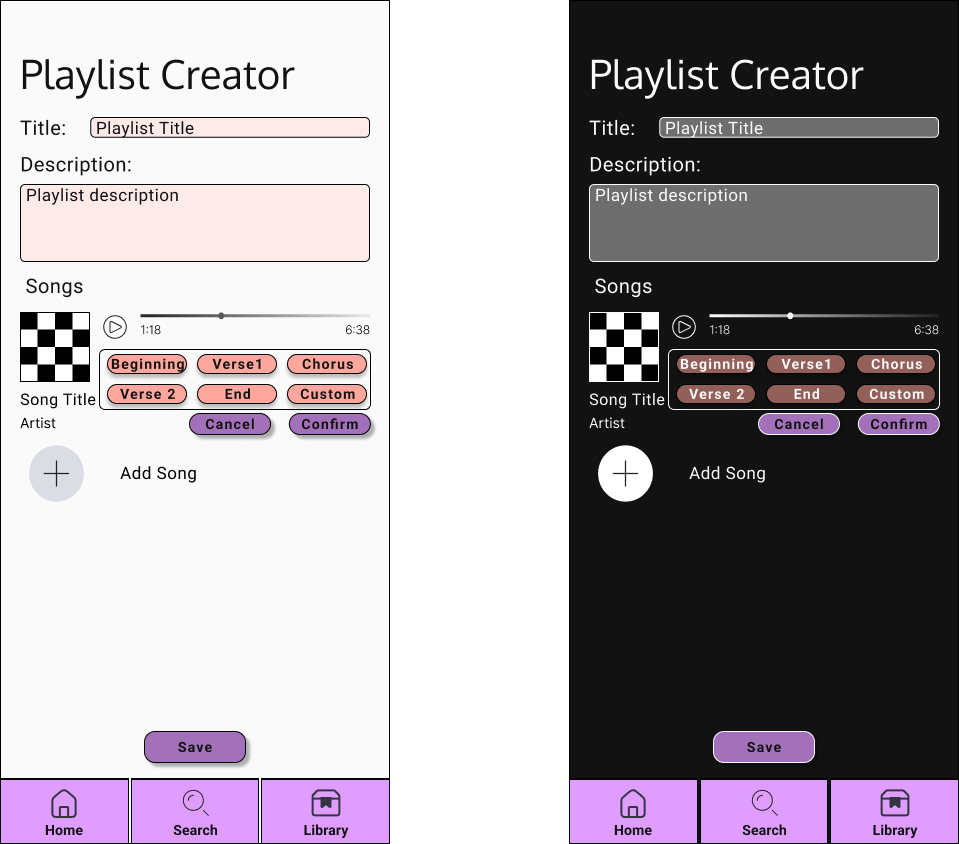
Light mode (left), Dark mode (right)
Version 1 was created in Figma. Figma offers a wide range of font families to choose from, layout tools, and plugins that can check for color accessibility standards.
Layout: To arrange the screen area, I created two sets of layouts: one for the main layout of the screen’s components and one for the navigation bar.
Colors: I considered light mode vs. dark mode. I used Adobe’s color contrast checker to ensure that the contrast ratio was acceptable by Web Content Accessibility Guidelines (WCAG) standards. I initially chose a purple and coral colored theme for this app. The feeling I wanted to achieve was a bright and warm color theme to reflect the idea of good memories. I adjusted the color palette around these two colors using Adobe’s Color website tool to apply the Color Harmony rule.
Typography: I chose two sans serif type fonts to use throughout the app: Oxygen and Roboto. Using two font families will help create some contrast between the headings and body text. Using Material Design’s “The Type System” page typography tool, I adjusted the typography according to usage. I also took into account minimum size font that would be visible by users on a mobile device using the font families I chose.
Icons: I used commonly seen icons, such as a home icon for “Home” and a magnifying glass for “Search”.
Shapes: I considered container colors may not have much contrast against the background. I also wanted containers and buttons to be noticeable as interactive components, so I added a border to their shapes. Buttons also have a drop shadow.
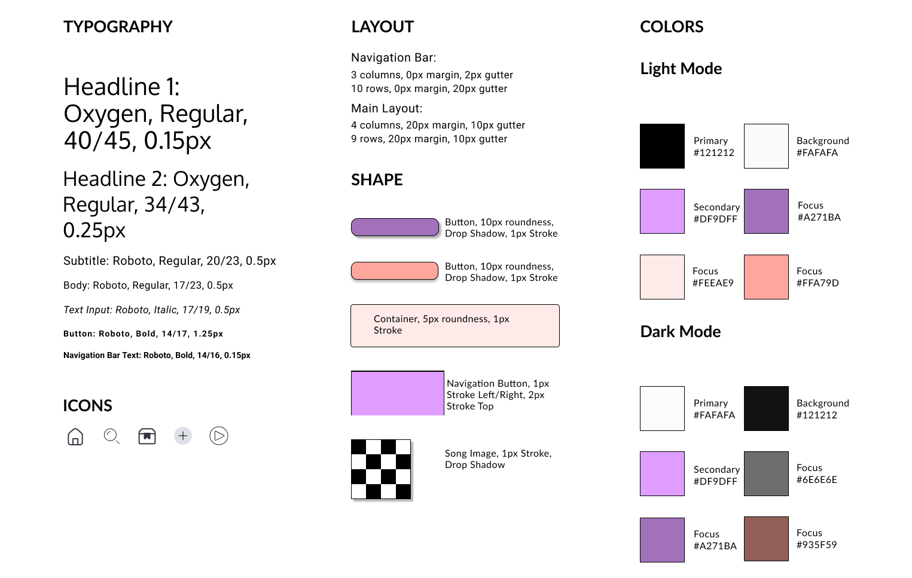
Version 1 of the Interface Design System. Created on Figma.
Version 2
I created a Version 2 of the Design Interface System in preparation for transitioning to the high fidelity prototype. For the high fidelity prototype, I plan to use Adobe XD. Adobe XD offers similar functionality, tools, and plugins as Figma for designing interfaces. However, using Adobe Creative Cloud offers even more access to designs and tools exclusive to Adobe.
Layout: I was much more flexible with objects that went within the margins of my interface screen. I maintained a margin of 20 on the left and right and a margin of 50 on the top and bottom. For the main layout within the margins, the rows are 48 in width with a gutter size of 10, and the columns are 37 in width with a gutter size of 10. I adjusted the layout for a particular section of the screen, such as the layout within a component.
Colors: I visited the Adobe Color website, which has a section that shows a variety of color palettes based on keywords the user searches. I used the keywords “music” and “vibrant” to find a color palette to try on my app’s design. I found a color palette that featured vibrant and soft pinks, and applied those colors as my app’s accent color. I left my app’s background as a light gray to support the “vibrant” theme of the app. I then used the Contrast Checker tool on Adobe Color to check that my text color had enough contrast with the background and accent colors.
Typography: I visited the Adobe Fonts website and browsed fonts with filters for the “Clean” tag and “Sans Serif” classification. The “Clean” tag would filter for fonts that featured simple letterforms without decoration. I aimed to have my app’s interface be simple, clean, and easy to understand from the user’s perspective. I settled on New Zen for heading text and Mundial for body and button text.
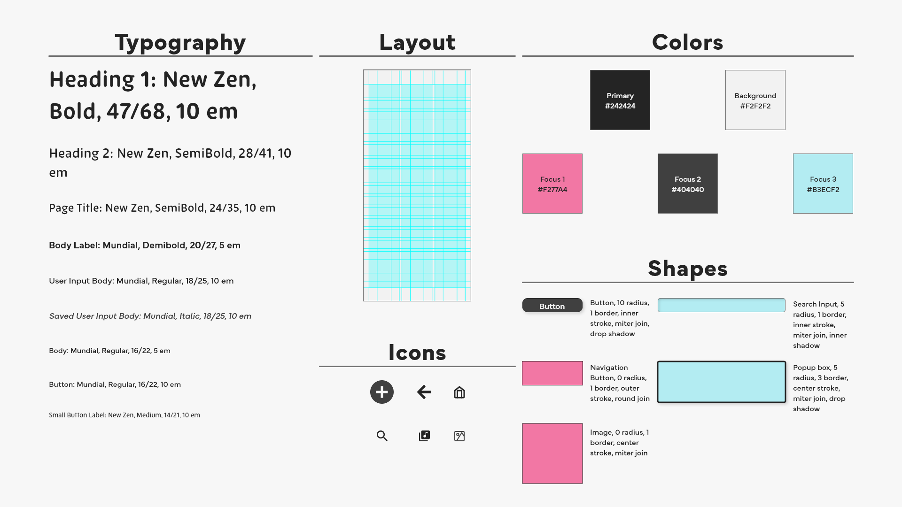
Version 2 of the Interface Design System. Created on Adobe XD.
Impression Test
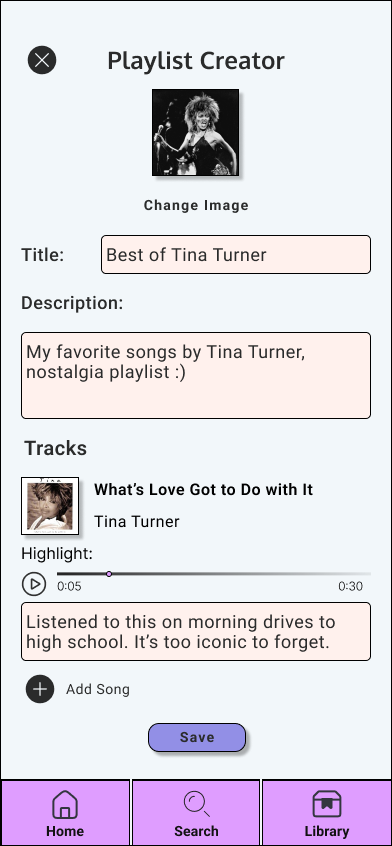
Frame shown in user impression test using Version 1's Design System
I created a fleshed out version of one of the screens of the app for a user impression test. In the user impression test, I asked the following questions:
What do you see? Please describe below.
Provide three words to describe this interface.
Any additional feedback?
Participants described the interface as simple and personalized. One participant mentioned the interface was functional, but felt a little cluttered and elaborated in the additional feedback. The participant said the navigation bar could be hidden while editing the playlist and a back button is enough. The participant further suggested that to reduce the clutter, make the descriptions minimized. The descriptions can have a function to be expanded for detailed reading. I will consider this design when the playlist is outside of editing mode. One participant noted that the song description feature may be meaningful to a niche audience.
High Fidelity Prototype
Version 1 Prototype
Based on user feedback from the low-fidelity prototype wireflow test and impression test on a sample frame with Version 1’s Design Interface System, I made the following modifications:
Customize playlist cover image.
Reduce clutter: Replaced the boxes for the user text input with a bold line and grayed-out text to indicate to users that it is a user text input section.
I conducted a pilot test of my app’s high fidelity prototype with a classmate my age who I know is a frequent user of music apps. I received encouraging feedback from the test about the current state of the prototype.
Part 1, Visual Impression Test: I showed an image of one of the interfaces.
The user commented that the app looks very easy to use and appeared trustworthy.
Part 2, perform tasks: I read the task scenarios to the user.
Task 1 asks the user to complete the following four steps: create a playlist, add one song, add a description for the song, and save the playlist.
The user did not read through all the steps for the task, but was able to intuitively complete the task.
The user explained aloud they were aware that the input text sections could be edited at any time and after saving the playlist, the user could return to edit at any time.
Task 2 asks the user to complete the following four steps: return to the playlist’s edit mode, add another song, create a highlight clip for the song, and save the playlist.
The user successfully navigated to the screen that creates the highlight clip for the song.
The user explained out loud that they can edit the song clip using the two sliders at the ends of the song timeline.
Part 3, rate task difficulty, time taken, and likelihood to perform the task.
The user overall found it easy to complete both tasks. It was noted that creating a song highlight took more effort than adding a song and description.
The user was able to complete both tasks in the time they expected.
The user found it more likely that they would perform task 1 then task 2. The user commented that they don’t use a highlight feature often.
Part 4, agree or disagree with statements about user experience with the app.
From the overall results, the user expressed that they are likely to use this kind of app and the app was easy to learn to use and navigate.
Part 5, describe the app’s user experience with five words.
The user chose the following words: calm, familiar, innovative, professional, and trustworthy.
“Calm” and “familiar”: Indicates the app’s design is similar to other music apps such that using the app was not a difficult experience.
“Innovative”; Describes the playlist curation features the app focuses on.
“Professional” and “Trustworthy”: Describes the overall appearance of the app and the user’s experience with navigating the app.
Version 2 Prototype
After reviewing the feedback from the usability test for Version 1 and recommendations made by my mentor for this project, I made some design changes to the prototype and slightly modified the task scenarios for usability testing.
Layout redesign: I experimented more with the layout and created a layout guide to use across all interfaces. I used both the guide tool and square grid layout tool to space out objects across the screen. I set the grid squares to size 10. Then, I adjusted the objects on each screen to fit in this layout and spaced them consistently using the square grid.
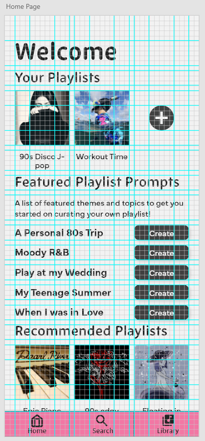
Frame of Home Page shown with square grid and guide layout.
I made slight modifications to screen objects.
I changed the boldness of the user input text line.
I created a button shape for the “Save” and “Edit” buttons in the Playlist Creator.
I removed the “Confirm” buttons for the user to confirm their song description. Users typically tap outside of the user input containers in mobile apps. A “Confirm” button is redundant for that function.
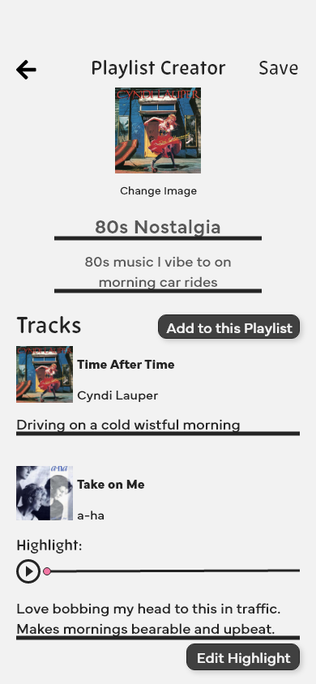
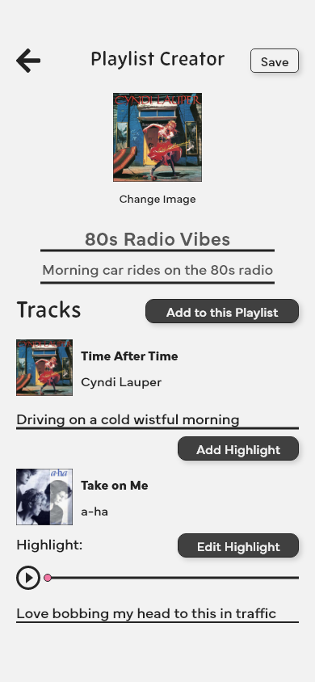
Frame comparison between versions: Version 1 (left), Version 2 (right)
Below is an overview of the high-fidelity prototype Version 2:
Version 2 High Fidelity Prototype frames shown with wire flow arrows.
For Version 2’s usability test, I modified how the task scenarios were explained. Version 1’s task scenarios listed the steps to complete the task. I want to know if the user can replicate those steps without being explicitly told what they are. The modified task scenarios are as follows:
Task 1: You are in search of a music app where you can personalize your playlist with notes for songs you add. You find Rhythmry, which focuses on a curated playlist creation experience. You want to add a comment to songs you add in the playlist. To test out the app, you want to start with adding one song to a new playlist.
Task 2: You've added one song so far. You noticed the app has a feature to highlight something in a song. You want to check it out by using this feature in the second song you add.
The participant for Version 2’s usability test is another classmate who is an active user of music apps. I received more valuable feedback about the prototype from this test.
Part 1, Visual Impression Test: I showed an image of one of the interfaces.
The user commented that the app looks very easy to use, but felt neutral about how trustworthy the app looks.
Part 2, perform tasks: I read the task scenarios to the user.
Task 1 describes a scenario in which the user wants to test the comment feature for a song added to the playlist. Starting from the home page, the user interacted with the plus button icon to create a new playlist. Then they clicked on the button to add a song to the playlist. After going through the search screens, they successfully added a song to the playlist. The user did not interact with the comment feature for the song, which is likely because of how I worded the scenario in Task 1.
Task 2 describes a scenario in which the user wants to add a second song to try the highlight feature. The user added the second song to the playlist and clicked to “Add Highlight” for the song. There was some struggle on the highlight editor screen because the current prototype does not simulate being able to interact with the sliders on the editor. However, it was clear the user understood how the highlight editor is supposed to work because during their interaction with the interface, the user tried to click and drag on the sliders to adjust the track length for the song.
Part 3, rate task difficulty, time taken, and likelihood to perform the task.
The user found Task 1 very easy to perform and Task 2 somewhat easy to do.
The user thought it took the expected time to complete Task 1 but somewhat longer than expected for Task 2.
The user feels neutral about how likely they are to complete Task 1. The user explained that this type of task they would probably perform once in a while. For Task 2, the user would use the highlight feature a lot.
Part 4, agree or disagree with statements about user experience with the app.
The user somewhat agreed with the statement of using the app frequently. The user liked the highlight feature because they can listen to their favorite parts of each song.
The user overall thought the app made sense and was easy to use. The user did comment that they were confused if they were able to edit their own descriptions in the prototype’s interface. The prototype was limited in simulating this functionality as there was no programming done to support it. The user also commented that older people may have some difficulty learning to use the app.
Part 5, describe the app’s user experience with five words.
The user chose the following words: familiar, exciting, creative, intimidating, and fresh.
“Familiar”: The user commented that the app’s appearance somewhat reminded them of the app Spotify.
“Exciting” and “Creative”: The user commented that the highlight feature is not something they usually see in music apps.
“Intimidating”: The user explained they were not sure if the highlight editor was working because the sliders would not move when they tried to drag it. The user was also unsure if they were able to add their own descriptions.
“Fresh” The user liked the idea of adding song descriptions and the highlight feature.
Conclusion
While researching for this project, I learned a lot more about the nuances and complex relationships between music and the emotions and memories it can evoke in listeners. I further explored this by conducting preliminary user interviews to learn about what music means to people. These helped me generate a few ideas to try as features in my app to enhance the personalization experience. I first approached this goal by observing the features of other music apps. I found that many music apps share similar features, but each one has a feature or select set of features they have that sets them apart from other music apps. I then began designing the app.
During the design process, I encountered some difficulties.
Creating the interface’s layout is a time-consuming and complex process. I spent a significant amount of time experimenting with layouts.
I chose Adobe XD to create the high-fidelity prototype. It was my first time using Adobe XD so some time was spent on familiarizing myself with its features and the additional resources Adobe’s Creative Cloud provides.
The high-fidelity prototype had limited functionality. For example, users are unable to type into a form box. Thus, during usability testing, a tester became confused because I oversimplified some functionalities.
To further improve this project in the future, there are a few changes that can be made to the app’s design.
Implementing the functionalities I simplified in the current version of the high-fidelity prototype. In the future, I should explore other prototyping tools that can create realistic animations or generate code-based prototypes that behave like a real app. Alternatively, I can explore what resources I will need to code a simple prototype of certain functionalities.
From a Computer Science background’s perspective, I can also conduct analysis on the design process from the software side. This means understanding what functions could be implemented with code and how to program the user-interface designs such that it will satisfy user expectations of the app. From a programmer’s perspective, I may discover other limitations with the app’s design I did not anticipate.
Make changes to the app’s Playlist Creator interface. Currently, the Playlist Creator screen shows all tracks, where some tracks have a highlight created for them. Showing both tracks with and without highlight in the same screen may cause confusion to the user while editing the playlist, because there are two similar buttons that say “Add Highlight” and “Edit Highlight”.
Possible solution: Design two modes of editing in the Playlist Creator. One mode lists all tracks without showing a track’s existing highlight. The second mode shows tracks and the highlights that have been created for them. The user can edit existing highlights from this mode.
References
Apple. (n.d.). ITunes - Music Identity Guidelines. Apple. https://www.apple.com/itunes/marketing-on-music/identity-guidelines.html#listen-on-apple-music-badge
Curry, D. (2023, May 2). Music streaming app revenue and Usage Statistics (2023). Business of Apps. https://www.businessofapps.com/data/music-streaming-market/
Janata, P., Tomic, S. T., & Rakowski, S. K. (2007). Characterisation of music-evoked autobiographical memories. Memory, 15(8), 845–860. https://doi.org/10.1080/09658210701734593
Jäncke, L. (2008). Music, memory and Emotion. Journal of Biology, 7(6), 21. https://doi.org/10.1186/jbiol82
Lüders, M. (2019). Pushing music: People’s continued will to archive versus Spotify’s will to make them explore. European Journal of Cultural Studies, 24(4), 952–969. https://doi.org/10.1177/1367549419862943
Makromusic. (2019). makromusic Brand Guidelines and Press Kit. Makromusic. https://makromusic.com/basinkiti
Minhas, S. (2021, May 14). 8 rules of Mobile Design. Medium. https://uxdesign.cc/8-rules-of-mobile-design-1b8d9936c241
Musicboard. (2021). Share your love for music with friends. Musicboard. https://musicboard.app/
Van Dijck, J. (2006). Record and hold: Popular Music between personal and collective memory. Critical Studies in Media Communication, 23(5), 357–374. https://doi.org/10.1080/07393180601046121
Yahjian, K. A. (2023, May 31). Tools. Amazon Music for Artists. https://artists.amazonmusic.com/tools
YouTube. (n.d.). YouTube brand resources and guidelines - how YouTube works. YouTube. https://www.youtube.com/howyoutubeworks/resources/brand-resources/#logos-icons-and-colors
Zhulidin, A. (2023, June 7). Guide for designing better mobile apps typography. Medium. https://uxdesign.cc/guide-for-designing-better-mobile-apps-typography-5796495ef86f